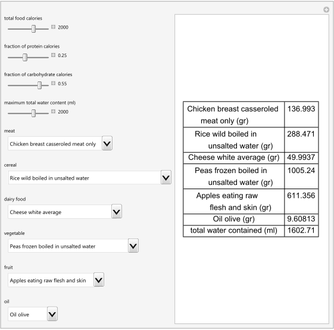

HCSL Publications
Clinical Tools
1. Chatzimichail T. Enteral Nutritional Design. Wolfram Demonstrations Project, Champaign: Wolfram Research, Inc., 2017.
Abstract
Enteral feeding refers to the delivery of nutrition directly into the gastrointestinal tract, thereby providing part or all of a patient's caloric and nutritional requirements. To design an enteral nutrition formula, the respective quantities of up to six selected foods (a meat, a cereal, a vegetable, a fruit and an oil) are calculated. It is desired that their combination comply with user-defined specifications: total required calories (10-3000), fraction of protein calories (0.15-0.40), fraction of carbohydrate calories (0.15-0.40) and maximum total water content of the foods (1-3000 ml). The specifications are set using the sliders. The foods are selected using their respective menus. Each menu includes a "None" option.
Comment
This free application, that can be used in a clinical setting, shows a method for the design of enteral nutrition. It includes the respective data of all the foods of the 2015 version of the Composition of Foods Integrated Dataset (CoFID), published by Public Health England (PHE).

Snapshot
Source code (Revised on 10/03/2021)